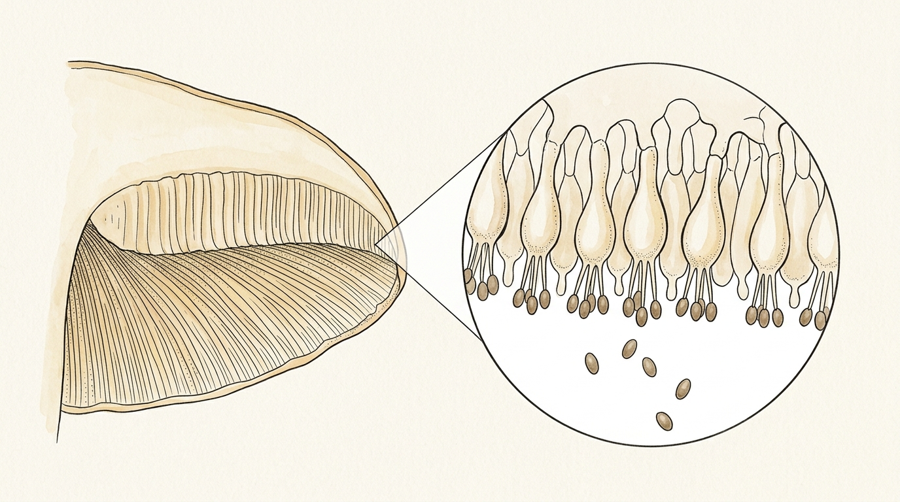

A single spore can grow into a healthy mycelium that never makes a single mushroom. For the familiar gilled mushrooms, fruiting needs a partner—and that explains how growers actually start.
Warm-up from lesson 2
One spore isn't enough
In lesson 1 the cycle looked simple: spore → mycelium → mushroom. For the gilled-mushroom group—biologists call them club fungi (Basidiomycota)—there's a hidden step in the middle. OpenStax §24.2
Sporegerminates
One-parent myceliumgrows, feeds, can't fruit
Two mycelia fusecompatible mating types
Mushroomgills make new spores
Step 1 — alone. A spore germinates into a primary mycelium: every cell carries one nucleus, one set of genes. It can grow and feed, but in this group it isn't the stage that makes mushrooms.
Step 2 — meet a partner. When it meets a mycelium of a different, compatible mating type, their hyphae fuse. Fungi don't have "male" and "female" here—just strains that are or aren't compatible.
Step 3 — two nuclei, side by side. The result is a secondary mycelium where each cell holds two separate nuclei, one from each parent. They don't merge yet. This is the main, long-lived stage of the fungus, and it's the one that grows the mushroom. OpenStax §24.2
Step 4 — mix and scatter. The gills (lamelle) under the cap are packed hyphae. On them sit tiny club-shaped cells, the basidia(basidi). Only there do the two nuclei finally fuse, reshuffle the genes, and split into four new spores—each a new mix of both parents. OpenStax §24.2

Cap cutaway (left)Tightly packed gills create huge surface area
Gill surface zoom (right)Each club-shaped basidium makes 4 spores
Where the spores actually come from: millions of microscopic basidia line every gill plate, each holding four spores on tiny prongs before dropping them into open air.
Shop-bought grow kits fruit reliably within weeks. But you've just learned that a single spore can't fruit, and finding a compatible partner is luck. So how do growers make it reliable? Think first, then open.
One explanation
They mostly don't start from spores. They start from an established mycelium culture that already fruits, and grow it into sterilized grain—that colonized grain is spawn. Spores are "less developed than established mycelium" and get contaminated easily. Wikipedia: Fungiculture
So the "spawn" in our glossary is basically a head start: the slow, lucky part (spore → partner → fused mycelium) has already happened.